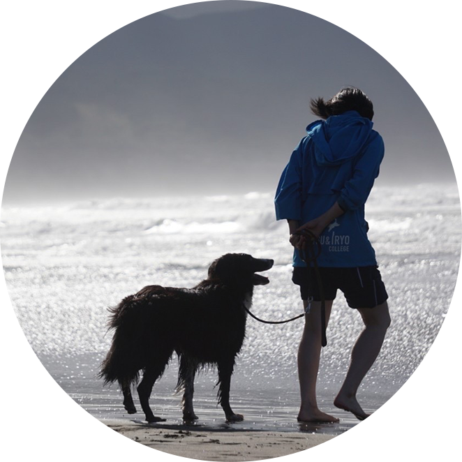
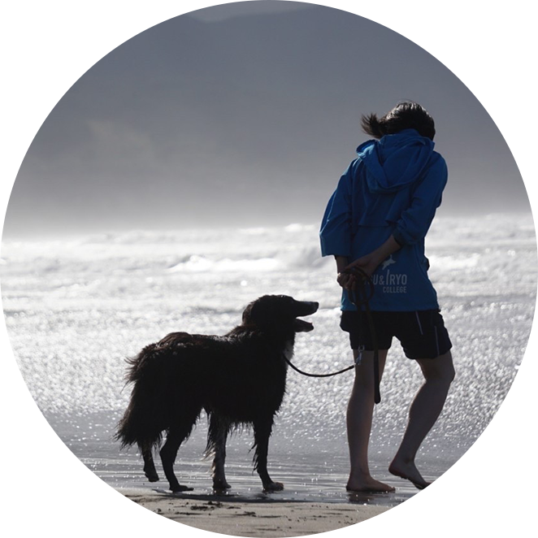
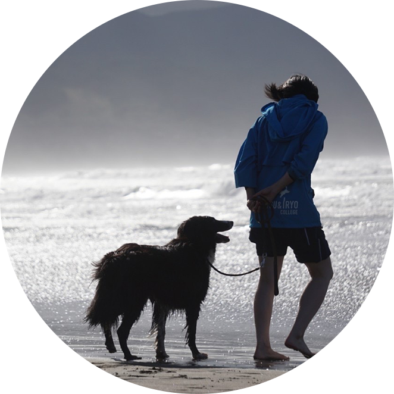
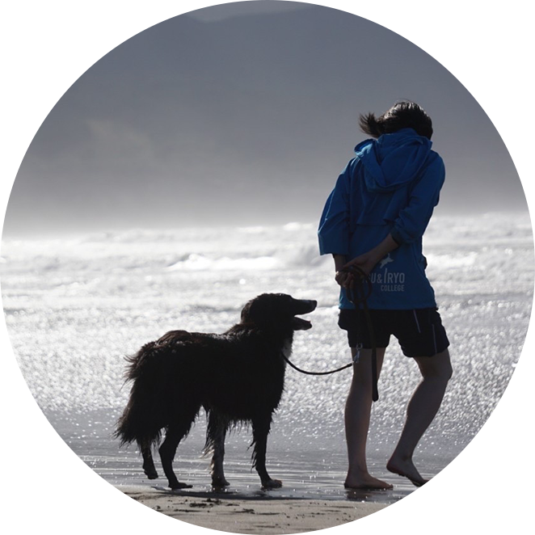

筒井 美帆

筒井 美帆

筒井 美帆

筒井 美帆
～まえがき～
ポートフォリオの紹介にある私の性格や人生観を表す「海」について、もう少しだけ掘り下げて書きたいと思います。考え方や心の在り方、人との関わり方など、改めて自分について考える良い機会になったと感じています。
私の今までの人生を振り返ってみれば、良くも悪くも流されて生きてきたな、と感じています。波に抗うことができず流されたこともありましたし、自分の意志で波に身を任せた時もあったと思います。自分のことを「一つの場所や集団に長く留まることなく、新しい場所や何かを求めてゆったり流されていく」性格なんじゃないかと感じています。大変な時もありましたが、私は自分がこの性格でよかったなと今では感じています。 「海」を「人生」と例えたとき、特に私のようなカナヅチ（泳ぎが下手＝生きるのが下手）は頑張って泳げば泳ぐほど溺れて沈んでいきます。（現実でも水泳は苦手で５ｍしか泳げません） ならば、そもそも泳がず黙って浮いていればいいのだ、と思いました。どこかにたどり着きさえすれば、何かあるし、誰かに出会えます。そこは財宝が眠っている宝島かもしれないし、毒蛇と凶暴なサルしかいない危険な島かもしれません。そして、そんな嬉しいサプライズやとんでもないアクシデントが私の人生の醍醐味でもあるのです。
一方で、漂流されている間も誰かに出会うこともあるし、陸地では見られない景色も見ることができます。その誰かは私にとって「気づき」や「勇気」を与えてくれる存在だと思っています。その存在や見てきた景色があるからこそ今の私があるのだなと感じているので、例え短い時間しか共にいられなくても一つ一つの出会いを大切にしています。漂流していれば嵐に巻き込まれたり、逆に船に乗せてもらえたり、自分にとって想定外のことばかりおきますが、その瞬間に出会う誰かはきっと、今の自分だからこそ必要な人であったり、今の自分だからこそ出会えたのだと思っています。
～あとがき～
ちなみに題名の「Do you catch my drift?」は「私の言いたいことわかる？」と訳します。「drift(漂流)」というスラングを使った言葉です。今回「海」というテーマでポートフォリオサイトを作り、私の「伝えたいこと」と相性がよさそうだったのでこのフレーズを選びました。 実際にこのフレーズを日常で使ったことはありませんが「使えたらカッコイイだろうな～」という憧れと、「この内容で私のあれこれが伝わってますか？」という私からの読み手側への問いかけでもあります。